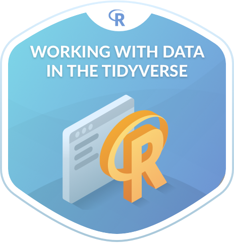
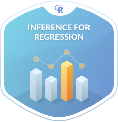

R语言数据科学入门
July 21, 2018
1 介绍


我是新手，不会写代买。但我想学习R语言，我应该如何开始？ 如果你有这个疑问的话你就来对地方了！
1.1 新手入门介绍
本书没有背景知识要求。不需要线性代数，不需要微积分，也不需要会编程。本书是介绍数据科学家，统计学家，数据新闻记者和其他研究人员对数据分析实践的入门介绍。
在图1.1 中，概括了本书的内容。首先在第二章 ??中，会介绍R软件，R studio软件。学习什么是R package。并且会探索第一个数据集：2013年所有从纽约市起飞的国内航班。
- 数据科学: 你将开始组装你的数据科学工具箱
tidyversepackages. 包括: - 数据建模: 使用
moderndivepackage中的数据科学工具, 你将开始进行数据建模. 包括: - 统计推断: 当你熟悉的一些数据科学的工具后, 我们将学习
inferpackage 来学习统计推断. In particular: - 回顾数据建模: 有了统计推断的知识后，我们再次回顾之前建立的数据模型：
- Ch.??: 解读这些模型结果的统计含义和应用。本章的最后将探讨什么叫‘数据思维’并分享一个西雅图房价分析的案例

Figure 1.1: ModernDive Flowchart
1.1.1 你将在这本书学到的内容包括
- 如何使用R 去了解数据.
- 如何运用置信区间和假设检验去回答统计学问题
- 如何有效的运用R 工具去写‘数据故事’
什么是数据故事？就是通过数据分析并使用数据可视化，统计结论去回答读者的问题。例如， 在芝加哥，人均收入与犯罪的关系有多大? 和 昆廷·塔伦蒂诺导演多少次在电影中使用脏话)?. 更多关于数据故事的内容可以到这篇文章了解 与谷歌一同思考.
For other examples of data stories constructed by students like yourselves, look at the final projects for two courses that have previously used ModernDive:
- Middlebury College MATH 116 Introduction to Statistical and Data Sciences using student collected data.
- Pacific University SOC 301 Social Statistics using data from the fivethirtyeight R package.
This book will help you develop your “data science toolbox”, including tools such as data visualization, data formatting, data wrangling, and data modeling using regression. With these tools, you’ll be able to perform the entirety of the “data/science pipeline” while building data communication skills (see Subsection 1.1.2 for more details).
In particular, this book will lean heavily on data visualization. In today’s world, we are bombarded with graphics that attempt to convey ideas. We will explore what makes a good graphic and what the standard ways are to convey relationships with data. You’ll also see the use of visualization to introduce concepts like mean, median, standard deviation, distributions, etc. In general, we’ll use visualization as a way of building almost all of the ideas in this book.
To impart the statistical lessons in this book, we have intentionally minimized the number of mathematical formulas used and instead have focused on developing a conceptual understanding via data visualization, statistical computing, and simulations. We hope this is a more intuitive experience than the way statistics has traditionally been taught in the past and how it is commonly perceived.
Finally, you’ll learn the importance of literate programming. By this we mean you’ll learn how to write code that is useful not just for a computer to execute but also for readers to understand exactly what your analysis is doing and how you did it. This is part of a greater effort to encourage reproducible research (see Subsection 1.1.3 for more details). Hal Abelson coined the phrase that we will follow throughout this book:
“Programs must be written for people to read, and only incidentally for machines to execute.”
We understand that there may be challenging moments as you learn to program. Both of us continue to struggle and find ourselves often using web searches to find answers and reach out to colleagues for help. In the long run though, we all can solve problems faster and more elegantly via programming. We wrote this book as our way to help you get started and you should know that there is a huge community of R users that are always happy to help everyone along as well. This community exists in particular on the internet on various forums and websites such as stackoverflow.com.
1.1.2 数据科学 管道
You may think of statistics as just being a bunch of numbers. We commonly hear the phrase “statistician” when listening to broadcasts of sporting events. Statistics (in particular, data analysis), in addition to describing numbers like with baseball batting averages, plays a vital role in all of the sciences. You’ll commonly hear the phrase “statistically significant” thrown around in the media. You’ll see articles that say “Science now shows that chocolate is good for you.” Underpinning these claims is data analysis. By the end of this book, you’ll be able to better understand whether these claims should be trusted or whether we should be wary. Inside data analysis are many sub-fields that we will discuss throughout this book (though not necessarily in this order):
- 数据收集
- 数据整理
- 数据可视化
- 数据模型
- 推断
- 相关性与回归分析
- 统计结果的解读
- 数据沟通/数据故事
These sub-fields are summarized in what Grolemund and Wickham term the “Data/Science Pipeline” in Figure 1.2.

Figure 1.2: Data/Science Pipeline
We will begin by digging into the gray Understand portion of the cycle with data visualization, then with a discussion on what is meant by tidy data and data wrangling, and then conclude by talking about interpreting and discussing the results of our models via Communication. These steps are vital to any statistical analysis. But why should you care about statistics? “Why did they make me take this class?”
There’s a reason so many fields require a statistics course. Scientific knowledge grows through an understanding of statistical significance and data analysis. You needn’t be intimidated by statistics. It’s not the beast that it used to be and, paired with computation, you’ll see how reproducible research in the sciences particularly increases scientific knowledge.
1.1.3 可重复性研究
“The most important tool is the mindset, when starting, that the end product will be reproducible.” – Keith Baggerly
Another goal of this book is to help readers understand the importance of reproducible analyses. The hope is to get readers into the habit of making their analyses reproducible from the very beginning. This means we’ll be trying to help you build new habits. This will take practice and be difficult at times. You’ll see just why it is so important for you to keep track of your code and well-document it to help yourself later and any potential collaborators as well.
Copying and pasting results from one program into a word processor is not the way that efficient and effective scientific research is conducted. It’s much more important for time to be spent on data collection and data analysis and not on copying and pasting plots back and forth across a variety of programs.
In a traditional analyses if an error was made with the original data, we’d need to step through the entire process again: recreate the plots and copy and paste all of the new plots and our statistical analysis into your document. This is error prone and a frustrating use of time. We’ll see how to use R Markdown to get away from this tedious activity so that we can spend more time doing science.
“We are talking about computational reproducibility.” - Yihui Xie
Reproducibility means a lot of things in terms of different scientific fields. Are experiments conducted in a way that another researcher could follow the steps and get similar results? In this book, we will focus on what is known as computational reproducibility. This refers to being able to pass all of one’s data analysis, data-sets, and conclusions to someone else and have them get exactly the same results on their machine. This allows for time to be spent interpreting results and considering assumptions instead of the more error prone way of starting from scratch or following a list of steps that may be different from machine to machine.
1.1.4 给学生的最后建议
At this point, if you are interested in instructor perspectives on this book, ways to contribute and collaborate, or the technical details of this book’s construction and publishing, then continue with the rest of the chapter below. Otherwise, let’s get started with R and RStudio in Chapter ??!
1.2 给讲师的介绍
This book is inspired by the following books:
- “Mathematical Statistics with Resampling and R” (Chihara and Hesterberg 2011),
- “OpenIntro: Intro Stat with Randomization and Simulation” (Diez, Barr, and Çetinkaya-Rundel 2014), and
- “R for Data Science” (Grolemund and Wickham 2016).
The first book, while designed for upper-level undergraduates and graduate students, provides an excellent resource on how to use resampling to impart statistical concepts like sampling distributions using computation instead of large-sample approximations and other mathematical formulas. The last two books are free options to learning introductory statistics and data science, providing an alternative to the many traditionally expensive introductory statistics textbooks.
When looking over the large number of introductory statistics textbooks that currently exist, we found that there wasn’t one that incorporated many newly developed R packages directly into the text, in particular the many packages included in the tidyverse collection of packages, such as ggplot2, dplyr, tidyr, and broom. Additionally, there wasn’t an open-source and easily reproducible textbook available that exposed new learners all of three of the learning goals listed at the outset of Subsection 1.1.1.
1.2.1 这本书适合谁?
This book is intended for instructors of traditional introductory statistics classes using RStudio, either the desktop or server version, who would like to inject more data science topics into their syllabus. We assume that students taking the class will have no prior algebra, calculus, nor programming/coding experience.
Here are some principles and beliefs we kept in mind while writing this text. If you agree with them, this might be the book for you.
- Blur the lines between lecture and lab
- With increased availability and accessibility of laptops and open-source non-proprietary statistical software, the strict dichotomy between lab and lecture can be loosened.
- It’s much harder for students to understand the importance of using software if they only use it once a week or less. They forget the syntax in much the same way someone learning a foreign language forgets the rules. Frequent reinforcement is key.
- Focus on the entire data/science research pipeline
- We believe that the entirety of Grolemund and Wickham’s data/science pipeline should be taught.
- We believe in “minimizing prerequisites to research”: students should be answering questions with data as soon as possible.
- It’s all about the data
- We leverage R packages for rich, real, and realistic data-sets that at the same time are easy-to-load into R, such as the
nycflights13andfivethirtyeightpackages. - We believe that data visualization is a gateway drug for statistics and that the Grammar of Graphics as implemented in the
ggplot2package is the best way to impart such lessons. However, we often hear: “You can’t teachggplot2for data visualization in intro stats!” We, like David Robinson, are much more optimistic. dplyrhas made data wrangling much more accessible to novices, and hence much more interesting data-sets can be explored.
- We leverage R packages for rich, real, and realistic data-sets that at the same time are easy-to-load into R, such as the
- Use simulation/resampling to introduce statistical inference, not probability/mathematical formulas
- Instead of using formulas, large-sample approximations, and probability tables, we teach statistical concepts using resampling-based inference.
- This allows for a de-emphasis of traditional probability topics, freeing up room in the syllabus for other topics.
- Don’t fence off students from the computation pool, throw them in!
- Computing skills are essential to working with data in the 21st century. Given this fact, we feel that to shield students from computing is to ultimately do them a disservice.
- We are not teaching a course on coding/programming per se, but rather just enough of the computational and algorithmic thinking necessary for data analysis.
- Complete reproducibility and customizability
- We are frustrated when textbooks give examples, but not the source code and the data itself. We give you the source code for all examples as well as the whole book!
- Ultimately the best textbook is one you’ve written yourself. You know best your audience, their background, and their priorities. You know best your own style and the types of examples and problems you like best. Customization is the ultimate end. For more about how to make this book your own, see About this Book.
1.3 DataCamp

DataCamp is a browser-based interactive platform for learning data science, offering courses on a wide array of courses on data science, analytics, statistics, machine learning, and artificial intelligence, where each course is a combination of lectures and exercises that offer immediate feedback.
The following chapters of ModernDive roughly map to the following closely-integrated DataCamp courses that use the same R tools and often even the same datasets. By no means is this an exhaustive list of possible DataCamp courses that are relevant to the topics in this book, we recommend these ones in particular to supplement your ModernDive experience.
Click on the image for each course to access its webpage on datacamp.com. Instructors at accredited universities can sign their class up for a free academic licence at DataCamp For The Classroom, giving their students access to all premium courses for 6 months for free.
| Chapter | Topic | DataCamp Courses |
|---|---|---|
| 2 | Basic R programming concepts |  |
| 3 & 5 | Introductory data visualization and wrangling |  |
| 4 & 5 | Data “tidying” and intermediate data wrangling |  |
| 6 & 7 | Data modelling, basic regression, and multiple regression |  |
| 9 & 10 | Statistical inference: confidence intervals and hypothesis testing |   |
| 11 | Inference for regression |  |
1.4 联系与贡献
If you would like to connect with ModernDive, check out the following links:
- If you would like to receive periodic updates about ModernDive (roughly every 3 months), please sign up for our mailing list.
- Contact Albert at albert@moderndive.com and Chester chester@moderndive.com
- We’re on Twitter at ModernDive.
If you would like to contribute to ModernDive, there are many ways! Let’s all work together to make this book as great as possible for as many students and instructors as possible!
- Please let us know if you find any errors, typos, or areas from improvement on our GitHub issues page.
- If you are familiar with GitHub and would like to contribute more, please see Section 1.5 below.
The authors would like to thank Nina Sonneborn, Kristin Bott, and the participants of our USCOTS 2017 workshop for their feedback and suggestions. A special thanks goes to Prof. Yana Weinstein, cognitive psychological scientist and co-founder of The Learning Scientists, for her extensive contributions.
1.5 关于这本书
This book was written using RStudio’s bookdown package by Yihui Xie (Xie 2018). This package simplifies the publishing of books by having all content written in R Markdown. The bookdown/R Markdown source code for all versions of ModernDive is available on GitHub:
- Latest published version The most up-to-date release:
- Version 0.4.0 released on July 21, 2018 (source code).
- Available at ModernDive.com
- Development version The working copy of the next version which is currently being edited:
- Preview of development version is available at https://moderndive.netlify.com/
- Source code: Available on ModernDive’s GitHub repository page
- Previous versions Older versions that may be out of date:
- Version 0.3.0 released on February 3, 2018 (source code)
- Version 0.2.0 released on August 02, 2017 (source code)
- Version 0.1.3 released on February 09, 2017 (source code)
- Version 0.1.2 released on January 22, 2017 (source code)
Could this be a new paradigm for textbooks? Instead of the traditional model of textbook companies publishing updated editions of the textbook every few years, we apply a software design influenced model of publishing more easily updated versions. We can then leverage open-source communities of instructors and developers for ideas, tools, resources, and feedback. As such, we welcome your pull requests.
Finally, feel free to modify the book as you wish for your own needs, but please list the authors at the top of index.Rmd as “Chester Ismay, Albert Y. Kim, and YOU!”
1.6 关于作者
Who we are!
| Chester Ismay | Albert Y. Kim |
|---|---|
 |
- Chester Ismay: Data Science Curriculum Lead - DataCamp, Portland, OR, USA.
- Email: chester@moderndive.com
- Webpage: http://ismayc.github.io/
- Twitter: old_man_chester
- GitHub: https://github.com/ismayc
- Albert Y. Kim: Assistant Professor of Statistical & Data Sciences - Smith College, Northampton, MA, USA.
- Email: albert@moderndive.com
- Webpage: http://rudeboybert.rbind.io/
- Twitter: rudeboybert
- GitHub: https://github.com/rudeboybert
Chihara, Laura M., and Tim C. Hesterberg. 2011. Mathematical Statistics with Resampling and R. Hoboken, NJ: John Wiley; Sons. https://sites.google.com/site/chiharahesterberg/home.
Diez, David M, Christopher D Barr, and Mine Çetinkaya-Rundel. 2014. Introductory Statistics with Randomization and Simulation. First Edition. https://www.openintro.org/stat/textbook.php?stat_book=isrs.
Grolemund, Garrett, and Hadley Wickham. 2016. R for Data Science. http://r4ds.had.co.nz/.
Xie, Yihui. 2018. Bookdown: Authoring Books and Technical Documents with R Markdown. https://CRAN.R-project.org/package=bookdown.